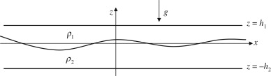

(1) Solve problem 8.22 in Fluid Mechanics (Kundu, Cohen and Dowling, 2016).
A simple model of oceanic internal waves involves two ideal incompressible fluids (\(\rho_2 > \rho_1\)) trapped between two horizontal surfaces at \(z = h_1\) and \(z = -h_2\), and having an average interface location of \(z = 0\). For traveling waves on the interface, assume that the interface deflection from \(z = 0\) is
\[
\xi = \xi_0 \operatorname{Re} \left\{ \exp \left( i(\omega t - kx) \right) \right\}
\]
The phase speed of the waves is \(c = \omega/k\).

(a) Show that the dispersion relationship is
\[
\omega^2 = \frac{gk(\rho_2 - \rho_1)}{\rho_2 \coth(kh_2) + \rho_1 \coth(kh_1)}
\]
where \(g\) is the acceleration of gravity.
(b) Determine the limiting form of \(c\) for short (i.e., unconfined) waves, \(kh_1\) and \(kh_2 \to \infty\).
(c) Determine the limiting form of \(c\) for long (i.e., confined) waves, \(kh_1\) and \(kh_2 \to 0\).
(d) At fixed wavelength \(\lambda\) (or fixed \(k = 2\pi/\lambda\)), do confined waves go faster or slower than unconfined waves?
(e) At a fixed frequency, what happens to the wavelength and phase speed as \(\rho_2 - \rho_1 \to 0\)?
(f) What happens if \(\rho_2 < \rho_1\)?
(2) How could the general solution from 8.22 be modified to give us the phase speed of shallow water gravity waves?